What
What we are trying to achieve
In the last eight parts of the series we set up a CustomOS with keyboard input via interrupts, disk input/output and a graphical terminal.
For the CustomOS to have any sort of real world use we would need user space applications, but also some enhancements on the way there.
Contents
Contents
Screen Resolution
So far we’ve used only 320 x 200 pixels by setting mode 13h. I’d like to increase the resolution to 640 x 480 pixels at the expensive of reducing the available colours.
Current Configuration - Mode 13h
regs.ax = 0x0013;
int32(0x10, ®s);
Mode 12h quirks
By setting mode 12h we get 640 x 480 pixels with 16 Colours.
regs.ax = 0x0012;
int32(0x10, ®s);
16 colours are represented by 4 Bit and not 8 Bit. This makes rendering a bit more complicated. Additionally in mode 12h we are dealing with “planes” that we have to switch through. Each plane represents on of the bits of the 4 bit colour. For this I’ve borrowed and adapted some code from [5,1].
We can select the plane by
#define VGA_GC_INDEX 0x3CE
#define VGA_GC_DATA 0x3CF
#define VGA_SEQ_INDEX 0x3C4
#define VGA_SEQ_DATA 0x3C5
uint8_t pmask;
p &= 3;
pmask = 1 << p;
// set read
outportb(VGA_GC_INDEX, 4);
outportb(VGA_GC_DATA, p);
// set write
outportb(VGA_SEQ_INDEX, 2);
outportb(VGA_SEQ_DATA, pmask);
Apparantly we need to set read first, but sometimes it works without.
So in order to make the entire screen colour blue we can
uint16_t screenHeight = 480;
uint16_t screenWidth = 640;
char * screenBuffer = (char *)0xA0000;
for(int p = 0; p < 4; p++) {
set_plane(p);
delay();
int pos = 0;
for(int y = 0; y < screenHeight - 20; y++) {
for(int x = 0; x < screenWidth - 20; x++) {
pos = y*screenWidth + x;
screenBuffer[pos] = 255; // set all on
}
}
}
This sort of works, but either I’m missing something, there’s a timing issue or a problem in QEmu. It could be due to a missing “vertical blank interrupt” that is signaled similarly to the keyboard interrupt on the “Programmable Interrupt Controller” (PIC). We likely shouldn’t just write to the buffer at any time, but rather when that interrupt fires so the BIOS knows the buffer is in consistant and clean state.
Every time I run it, it shows a different result
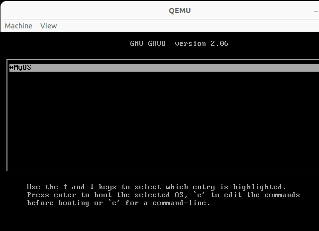
Also taken from [5,1] we can use the write_pixel4p function
void graphicsPutPixel(uint16_t x, uint16_t y, uint8_t c) {
unsigned wd_in_bytes, off, mask, p, pmask;
wd_in_bytes = screenWidth / 8;
off = wd_in_bytes * y + x / 8;
x = (x & 7) * 1;
mask = 0x80 >> x;
pmask = 1;
for(p = 0; p < 4; p++){
set_plane(p);
if(pmask & c)
*(char*)(0xA000*16+off) = (*(char*)((unsigned int)0xA000*16 + off))|mask;
else
*(char*)(0xA000*16+off) = (*(char*)((unsigned int)0xA000*16 + off))&~mask;
pmask <<= 1;
}
}
By writing less pixels at once we can write coloured rectangles in the corners - but it’s still very unstable and bootloops on every other boot.
for(int y = 1; y < 40; y++) {
for(int x = 600; x < 640; x++) {
graphicsPutPixel(x, y, 2); // 10 = green, 12 = light red, 18 = dark green
}
}
for(int y = 440; y < 480; y++) {
for(int x = 600; x < 640; x++) {
graphicsPutPixel(x, y, 12); // 10 = green, 12 = light red, 18 = dark green
}
}
We can how ever see that in theory it should have worked. Unforunately most these VGA Modes are not standardized and so emulators and hardware may behave differently. YMMV.
Double Buffering, adding delays for timing and writing only 20-40 pixels at once may help.
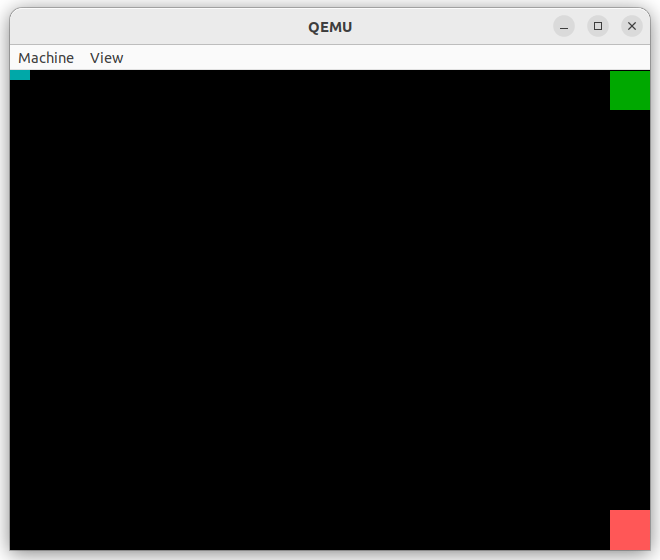
VBE Modes
On the osdev-forums [2] I found suggestions to use INT 10h/AH=4F instead as it expects a linear buffer with out planes.
There are more modes documented here [3]. VBE Modes in Qemu/Bochs source code [4].
#define VBE_VESA_MODE_640X480X888 0x112
The interface to use VBE Modes is a bit more involved we’d need to lookup and fill structs
struct VbeInfoBlock {
[..]
uint16_t OemStringPtr[2]; // isa vbeFarPtr
[..]
uint16_t TotalMemory; // as # of 64KB blocks
struct vbe_mode_info_structure {
[..]
uint16_t pitch; // number of bytes per horizontal line
uint16_t width; // width in pixels
uint16_t height;
[..]
uint32_t framebuffer;
Font Fixes
As we can see in direct comparison in text mode the numbers ‘0’ and ‘8’ are clearly distinguishable. But in the graphical terminal with our subpar font and really low resolution they are hard to tell appart.
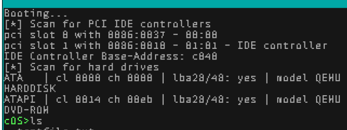 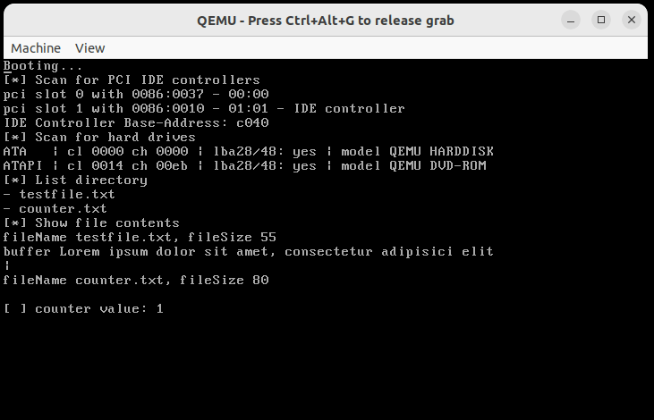
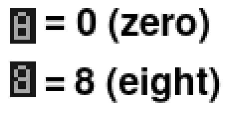
The difference is a single pixel on the left side.
To fix this I’ve simply swapped the letter “O” with “0”. It’s a hack, but solves the problem and is also the same approach old type writers made for traveling take, where ‘O’ is also ‘0’ and ‘I’ is also ‘1’.
User-Space Applications
To extend the operating system we’d need executable files containing applications.
In order to build compatible executable files we can use the same compiler as for the operating system. But loading and running additional code from disk and interfacing it with the kernel functions is more involved.
Ground for experimentation
As a ground for experimentaiton it makes sense to add a terminal command and function to the CustomOS dedicated to experimentation.
extern "C" {
[..]
fn runExperiment();
}
unsafe fn shellCommand(textBufferPos: usize) {
[..]
} else if shellCheckCommand(textBufferPos, "run-experiment") {
runExperiment();
[..]
}
And implement a function in C to print something:
void runExperiment() {
printf("Test!\n");
}
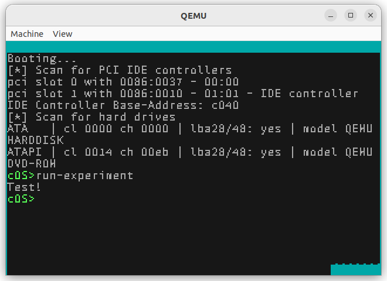
First sample application to overwrite pixels in the Framebuffer
As a first sample application we can start off by ignoring how to call kernel functions and just attempt to get our code to be run by the CustomOS. In order to tell whether it properly ran we can take advange of the framebuffer as it has a fixed and known memory location 0xA0000.
Prepare some code
As a first step to get code we can later put in an executable let’s write directly to the frame buffer into it.
This code will overwrite the top border from Cyan to Blue. The way the CustomOS is currently implemented the Top-Border isn’t overwritten by the screenUpdate() function so often so that we can see the result.
void runExperiment() {
for(int i = 0; i < 320*20; i++) {
((char *)0xA0000)[i] = 1; // blue
}
}
issuing “run-experiement” yields
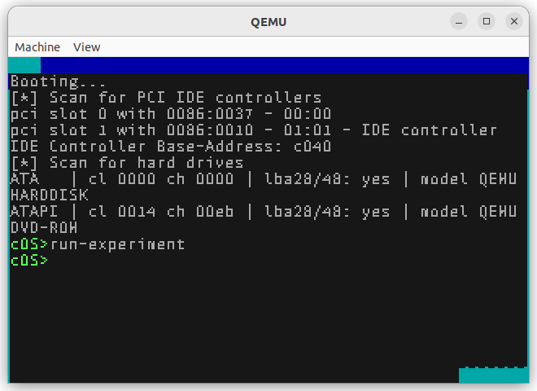
Create the application
With that code prepared, let’s make a standalone application that sets the colour red this time around.
In the next steps we’ll see how we can get the CustomOS to run that code from file.
In a newly created main.c write:
int main() {
for(int i = 0; i < 320*20; i++) {
((char *)0xA0000)[i] = 4; // red
}
return 0;
}
and compile it with the same compiler used for the CustomOS
../../../Pt1-CrossCompiler/out/path/bin/i686-elf-gcc -c main.c -o main.o -ffreestanding -O2 -Wall -Wextra -fno-exceptions
Get the Opcodes
When compiling code the compiler converts the human readable code to OpCodes (Operation-Codes). These codes are the commands the CPU will run.
Since modern computers follow the Von-Neumann architecture control commands and data are not separated from one another. This means we can load data containing Opcodes and then run that data on the CPU directly.
To get the Opcodes we run
objdump -d main.o
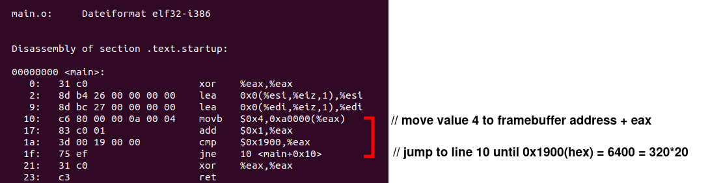
We can see the value range of the for-loop 320*20 and the for loop itself. It contains the jump “jne” (=jump when not equal) to line 10 and increments the counter in line 17.
Running Opcodes from Arrays
In order for the CustomOS to run our “overwrite-framebuffer” application we need to inject these Opcodes.
The approach to this is not much different to the way buffer overflows, format-string bugs, etc can be exploited. The book “The Shellcoders Handbook” [6] is a good read on this.
Let’s make shell code of this and run it inside the CustomOS by adapting our runExperiment() function.
void runExperiment() {
char shellcode[] ="\xc6\x80\x00\x00\x0a\x00\x04\x83\xc0\x01\x3d\x00\x19\x00\x00\x75\xef";
(void)shellcode;
}
and inside the CustomOS issue
run-experiment
Second sample application - calling Kernel functions
So far we’ve just overwritten a memory location. In order to properly write to the CustomOS terminal we need to be able to call the terminal_putchar function.
void terminal_putchar(char c) {
But how do the applications interface with the operating systems or more specifically how do we call that CustomOS kernel function from the application?
Since a function is simply a location in memory that we can jump to all we need is the address of that function in memory and knowledge of it’s signature.
Get address of function in the CustomOS
The address can change between recompilations of the OS so the easiest approach is to get it from the the OS itself.
To do this we can use our run-experiment function.
void runExperiment() {
printf("Exec Address of terminalPutChar: %p\n", terminal_putchar);
}
We can then run it to get the address
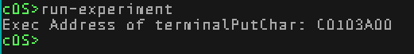
Calling functions by address
Calling a function by address isn’t difficult. This code writes an ‘X’ to the terminal.
void runExperiment() {
typedef void func(char c);
func* f = (func*)0xC0103A00;
f('X');
}
Notice how it calls a function at the address 0xC0103A00 we got from above and how we’re just assuming it to have the signature void f(char c).
Opcodes
Just as above we can extract the opcodes and make shellcode out of it
objdump -d main.o
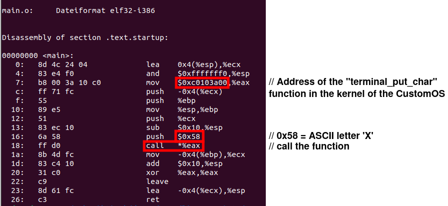
and adapt our function to try it
void runExperiment() {
char shellcode[] ="\xb8\x00\x3a\x10\xc0\xff\x71\xfc\x55\x89\xe5\x51\x83\xec\x10\x6a\x58\xff\xd0\x8b\x4d\xfc\x83\xc4\x10\x31\xc0\xc9\x89\x61\xfc\xc3";
(void)shellcode;
}
and run it from the terminal in the CustomOS by
run-experiment
Extended Version
We can of course do something a little more useful by writing an entire string and we could also invoke other functions from the kernel in the same manner.
typedef void func(char c);
func* f = (func*)0xC0103A00;
char * testStr = "Hello World!\n";
for(uint8_t i = 0; i < 14; i++) {
f(testStr[i]);
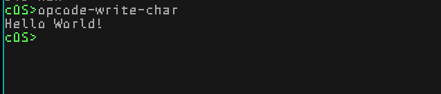
Executable Formats
With the above approach we’re still hardcoding the code into the kernel by putting the opcodes in the shellcode[] array.
But clearly we could just load that array from file. In the most simplest approach we could do just that.
Modern Unix/Windows have slightly more advanced executable file formats.
ELF File Format
Executable files in Unix Operating-Systems are usually in the “Executable and Linkable Format” (ELF).
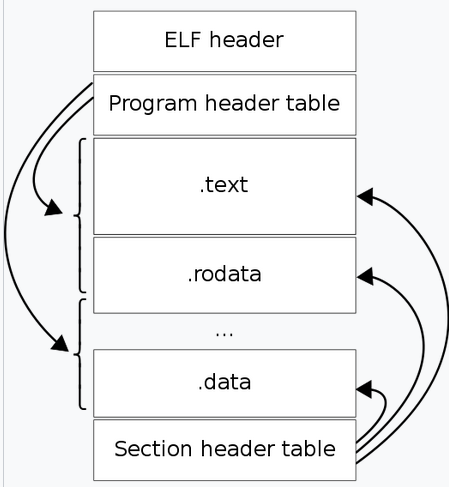
(Image taken from [8])
It wraps the Opcodes in the .datasection with a header and additional sections for additional data.
PE file
Windows does it a bit differently with the “Microsoft PE file”.
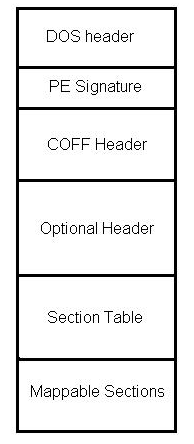
(Image taken from [9])
Progress
Conclusion
The CustomOS is beginning to become useful for actual tasks such as basic text editing. There are a number of further enhancements to be made. It’s been fun so far, there was a lot to learn and there is a path forward. Most of the goals defined in the first part of the series have been achieved.
1] https://github.com/levex/LevOS/blob/9abd49abfb6a8dffbc2c9c96c37f472c56ec700a/kernel/Kernel/VGAdriver.cpp#L795 2] https://forum.osdev.org/viewtopic.php?t=36632&p=305037 3] http://www.ctyme.com/intr/rb-0069.htm 4] https://github.com/qemu/vgabios/blob/19ea12c230ded95928ecaef0db47a82231c2e485/vbe.h#L192C3-L192C63 5] https://files.osdev.org/mirrors/geezer/osd/graphics/modes.c 6] Book: Anley et al. "The Shellcoder's Handbook" 8] https://en.wikipedia.org/wiki/Executable_and_Linkable_Format 9] https://en.wikibooks.org/wiki/X86_Disassembly/Windows_Executable_Files